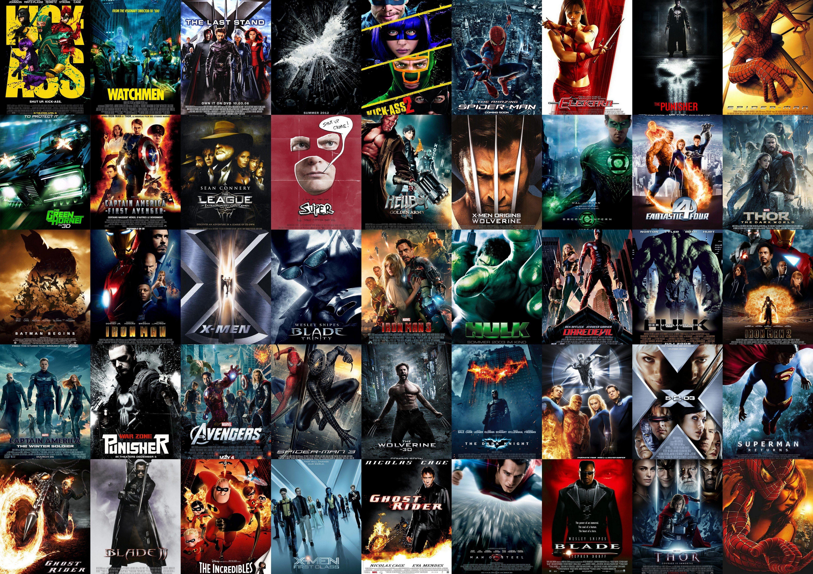
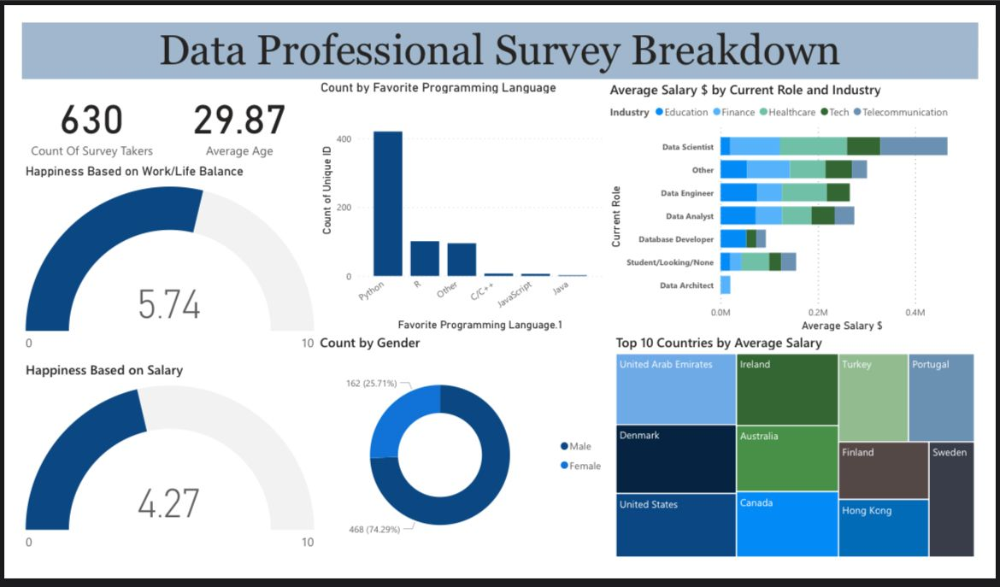

The "Cleaning and Analyzing COVID-19 Dataset using SQL" project focuses on processing, cleaning, and analyzing a raw COVID-19 dataset using SQL queries. The primary goal of the project is to transform the initial dataset into a structured, clean, and usable format, and then derive meaningful insights and trends related to the pandemic's progression.
The "Advanced SQL Analysis for Online Sports Clothing Company" project involves leveraging complex SQL functions to perform in-depth analysis on data from an online sports clothing company. The project aims to extract valuable insights about customer behavior, sales trends, inventory management, and marketing effectiveness, ultimately driving informed decision-making to optimize the company's operations and strategy
The project aims to analyze historical FIFA World Cup data spanning from 1930 to 2022. The dataset includes information about teams, matches, goals, venues, and other relevant details. The primary goals are to gain insights into team performance, team statistics, historical trends, and patterns across different world cup tournaments

In this project, we will be working with movie data to import, analyze, and visualize various aspects of it using the Python programming language. We'll utilize the Pandas library to handle and manipulate the data, and Matplotlib and Seaborn for creating insightful visualizations.

The "Visualizing and Cleaning Data Survey Insights" Power BI project aims to transform raw data from a survey focused on data professionals and their usage of programming languages into a clean, organized, and insightful visual representation. The project leverages Power Query for data cleaning and transformation, and Power BI for creating interactive visualizations that provide valuable insights into the preferences and trends of data professionals.